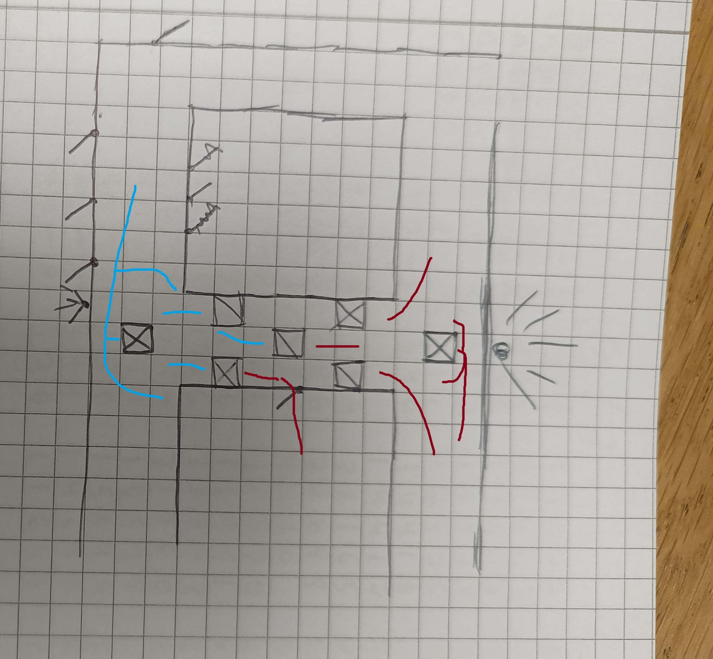

Project Overview
For this summer project I wanted to play around with different types of gameplay while practicing cover placement. I used Ben Bauer's YouTube video as a basis for this practice.
I wanted the player to start in a prison cell and very vulnerable. My idea was then that they would find things in the enviornment to help them evade the prison guards and security systems.
I also wanted the player to descend into a sewer-like area with some headcrab and zombie combat. Then zombie combat would blend with prison guards, to give the player a natural way of finding a gun.
Then I wanted the player to have some higher octane combat before the level ends.
Workflow
To gather the ideas above I wrote them down in a document, and together with the different "gates and keys" such as finding a crowbar to enable certain actions I ordered them in a sequence to make sure the level would follow a logical progression.
This is normally when I make 2D sketches to get an overview, but I experimented with instead making a quick draft in 3D since the level depended on a lot of level scripting. For planned longer scripted scenes, I made sure to start working on them
in a way that would let me build upon them if I had the time. For instance, I planned a scene where Gordon is escorted into the prison, stripped of his suit and then shoved into a cell. I started making this part where he gets shoved into the cell.
This allowed gameplay to work even if I wouldn't have time to script the full scene (which I didn't) but could easily be expanded upon by buliding the scene "backwards."
After making a prototype version of the level, I then started making 2D sketches to improve things, such as cover options and movement lanes for both player and AI in the combat areas. I also improved upon the general flow of the level through the 2D sketching.
A problem I had with the level flow was that entering the room where the suit was in the 3D prototype felt very awkward and was sometimes missed. So I funneled the player through the room where the suit was held (in a new location)
before starting the gunfight, improving on flow.
I also held a playtest for the final combat area. It showed that initial combat played well, but once the player went outside, it became too difficult. Part of this was that the first enemies spawned behind the player, on the second floor of the building.
This was intended to be a cool "getting ambushed moment" but fell flat due to it being too confusing and difficult to deal with. So I changed the order, having the first group of enemies instead spawn infront of the player, blocking off passage to the
escape car. This played a lot better.
Combat
After following Ben Bauer's advice, I made sure to give both the player and enemy AI different cover and lane options. The hallway is mostly symmetrical, but the AI spawns from both directions in their T-Cross, and also in the middle
of the hallway in the sideroom. Some cover is also physics based and/or breakable. This would break up the symmetry in different ways each playthrough and give the player the opportunity to use the chaos for interesting cover. One of the enemy AI is
scripted to toss a grenade into the hallway when they spawn, making sure there's at least some chaos. The breakable props also makes the grenade feel more impactful, when things actually blow up!

Player marked with blue and enemy with red.
For melee combat with zombies and headcrabs, I mostly put them in ambush positions. This was to make the player feel vulnerable and maybe get a bit scared. For the first headcrab area, I also used pulsing lights to sometimes obscure the headcrabs, making it
a bit more difficult and scary to fight them.
Lessons learned
For this project I practiced cover placement to improve combat, and my greatest lesson learned from this was the impact cover has on level flow, interest and fun. Giving the player options in what kind of cover to use, how to reach it and how to use it makes a huge difference.
I also experimented a lot with scripting, which showed how much time really can go into it. My plans for the big cinematic intro scene had to be scrapped because other things took too long, and I didn't have time to implement a fight against a helicopter,
since that also required a lot of scripting. Dan Taylor has said in a talk to build the risky set pieces first, and I will implement that advice whenever I'm planning on having big scripted scenes.
A last lesson learned was that combat also needs a climax. An issue with this level is that the final combat doesn't always feel final. That's why I wanted a helicopter fight added after it. Maybe NPC voice lines, music and sounds could help with this issue,
but for my next singleplayer project I will try to set up an obvious end point for a fight, so that the player can feel some finality when they beat the level.